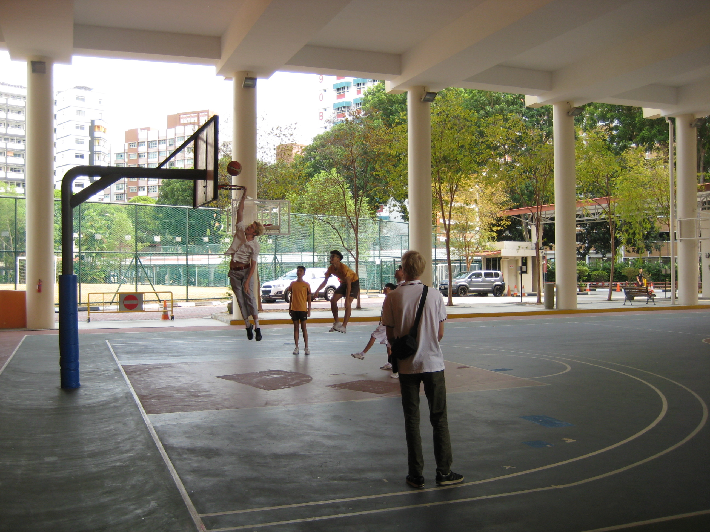
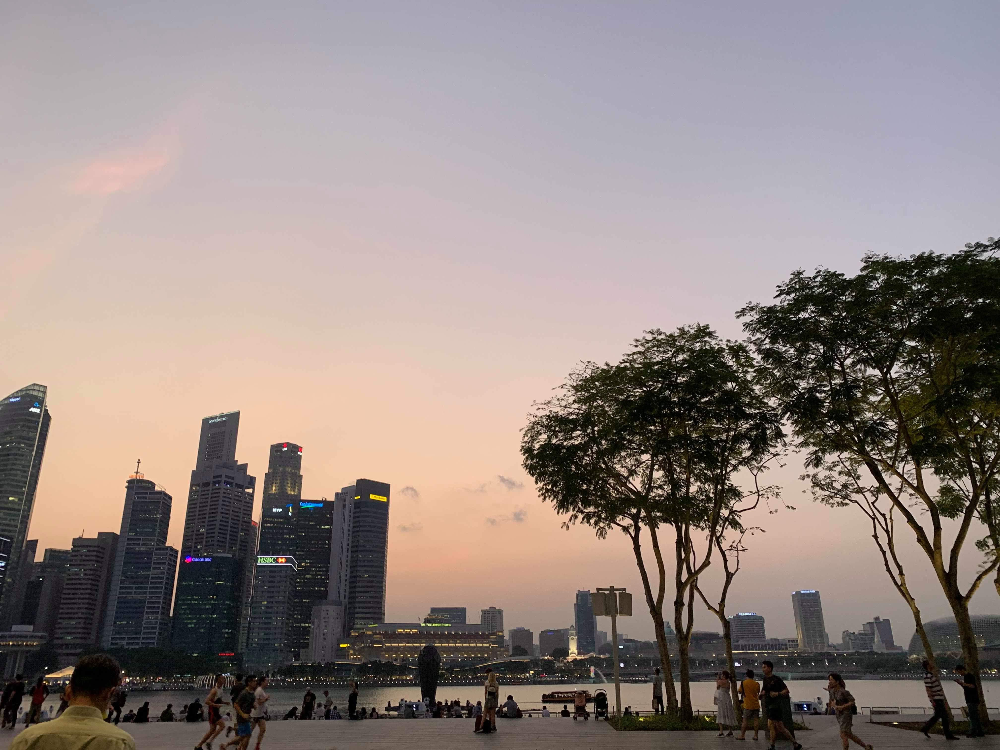
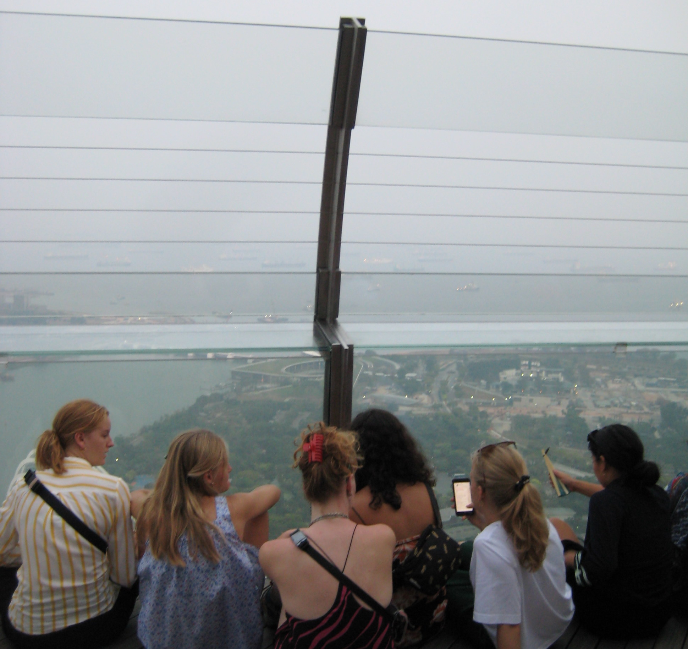
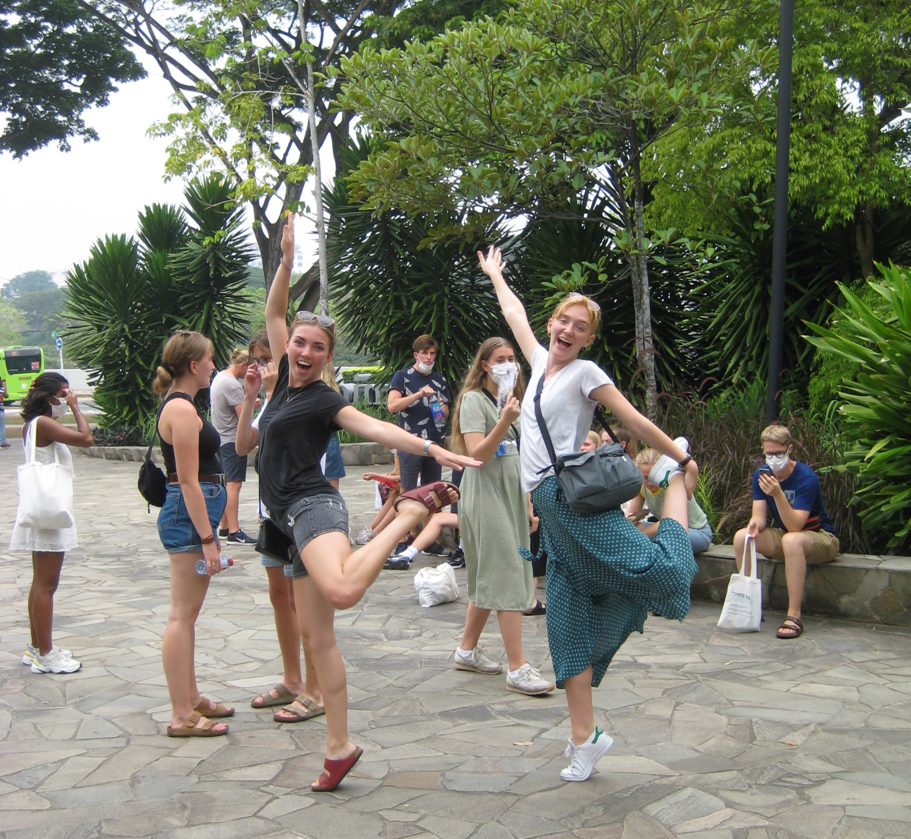

De bedste minder
Gør jeg selv den tjeneste at tage på Karaoke-bar! Noget af det bedste var nok at se vores matematiklærer gå helt amok til hans yndlingssang. I kan evt. prøve den vi var på, "Ten Dollar Club" med placering i Singapores china town.


   